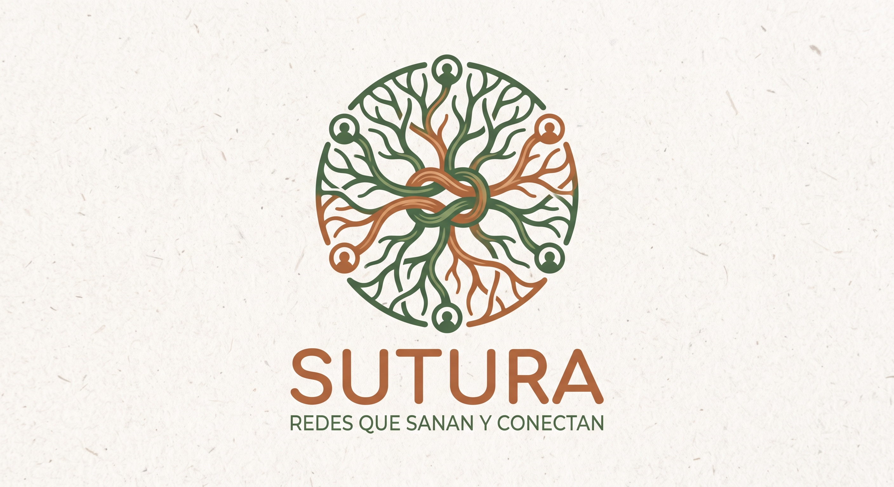

Afinando los detalles de acompañamiento...
Muy pronto tendrás aquí el desglose completo de nuestras propuestas para personas, grupos comunitarios y organizaciones sociales.
← Volver al inicio
SUTURAMuy pronto tendrás aquí el desglose completo de nuestras propuestas para personas, grupos comunitarios y organizaciones sociales.
← Volver al inicio